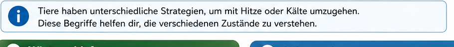
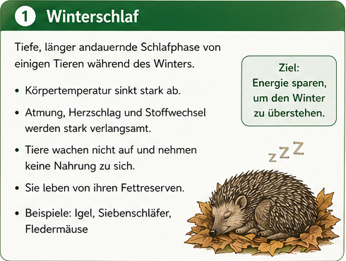

Zurueck zum Fach-Dashboard
Biologie Klasse 5
Modul 7: Temperaturbegriffe verstehen
Du unterscheidest die Begriffe Winterschlaf, Winterruhe, Waermestarre,
Hitzetod, Kaeltestarre und Kaeltetod und wendest sie auf biologische
Situationen begruendet an.
Lernen
Trainieren
Testmodul
Lehrplanbezug Niedersachsen
Das Modul passt zum Kompetenzbereich "Tiere und Angepasstheiten" im
Kerncurriculum Naturwissenschaften (Sek I): Beobachten, Vergleichen,
Erklaeren von Anpassungen an Umweltbedingungen und Grenzen des Lebens.
Temperaturabhaengigkeit von Tieren erklaeren
Begriffe fachsprachlich korrekt verwenden
Beispiele begruendet zuordnen
Grenzbereiche und Risiken biologisch deuten
Quellen:
Kerncurriculum Naturwissenschaften Niedersachsen (Sek I)
|
KMK-Bildungsstandards Biologie 2024
|
Didaktisches Konzept

Begriffe-Explorer
Klicke auf einen Begriff und lies Definition, Merkmale und Beispiel.
Winterschlaf
Winterruhe
Waermestarre
Hitzetod
Kaeltestarre
Kaeltetod

Interaktiv 1: Begriff korrekt zuordnen
Ordne jeder Aussage den passenden Begriff zu.
Neu laden
Pruefen
Noch nicht geprueft.
Interaktiv 2: Temperatur-Entscheider
Waehle Tiergruppe und Temperatur. Das Tool zeigt dir, welcher Begriff am besten passt.
Interaktiv 3: Mini-Szenarien
Lies die Situation und waehle den treffendsten Begriff.
Neu laden
Pruefen
Noch nicht geprueft.
Merke dir und Lerntipp
Training
Erzeuge neue Aufgaben und sichere die Begriffsanwendung.
Anzahl Aufgaben
6
10
12
Aufgaben erstellen
Pruefen
Noch keine Aufgaben erzeugt.
Testmodul
10 dynamische Fragen mit Punktestand und Rueckmeldung.
Test starten
Naechste Frage
Punkte: 0 / 10
Test noch nicht gestartet.
Klicke auf "Test starten".